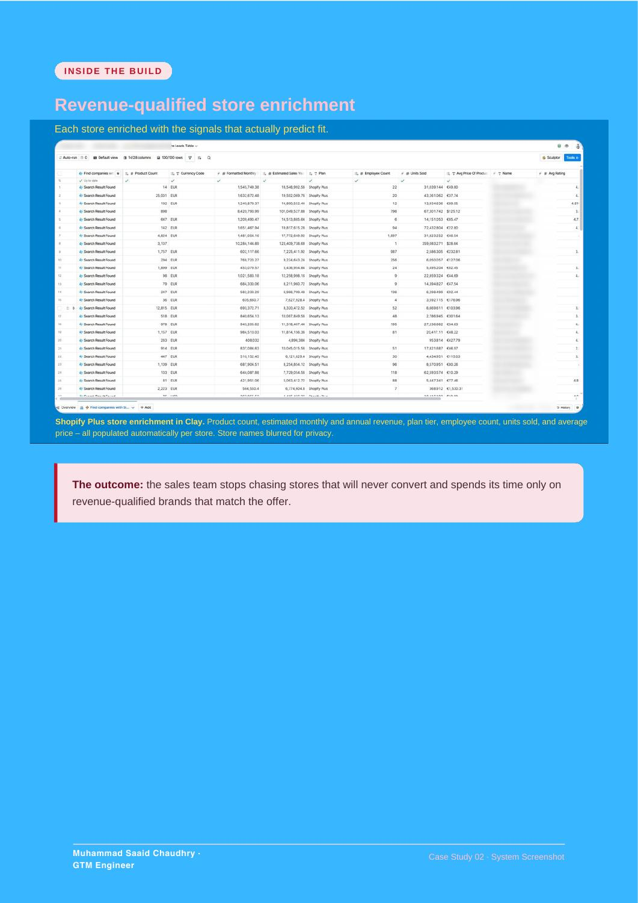

BUILD 02 / Clay · Ecommerce
Ecommerce Prospecting System
I built a Clay system that finds Shopify Plus stores and enriches each account with revenue, product catalog and team information before outreach.
THE RESULTShopify Plus stores, qualified
A structured prospecting system with the information needed to qualify stores before outreach.
01 / THE PROBLEM
What needed fixing
A store list alone does not tell you which brands fit an offer. Revenue, catalog size and team size help separate relevant accounts from poor fits.
02 / THE BUILD
What I built
I built a Clay system that finds Shopify Plus stores and enriches each account with revenue, product catalog and team information before outreach.
03 / HOW IT WORKS
- 01Find Shopify Plus stores
- 02Enrich revenue and catalog data
- 03Check team size and account fit
- 04Prepare qualified accounts
